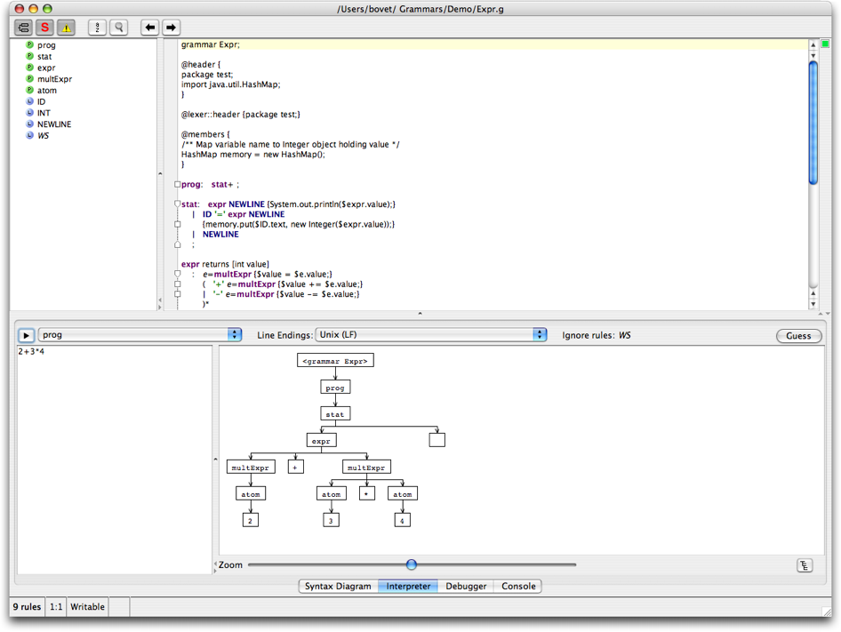
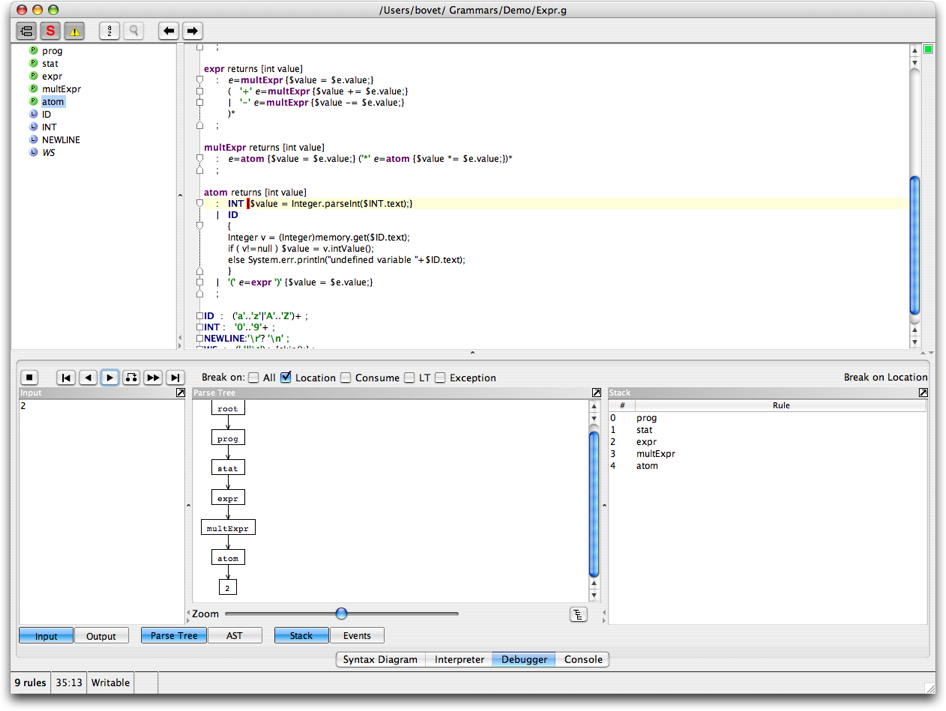
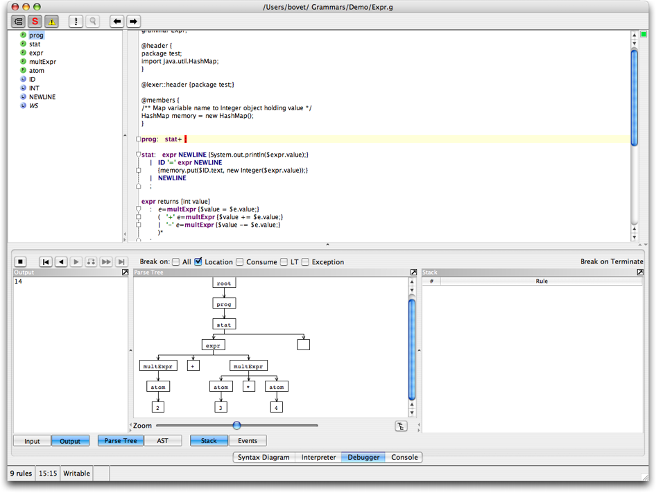

This tutorial describes how to use ANTLRWorks to create and run a simple "expression evaluator" grammar. This tutorial is under construction so come back later for more information.
grammar Expr;
@header {
package test;
import java.util.HashMap;
}
@lexer::header {package test;}
@members {
/** Map variable name to Integer object holding value */
HashMap memory = new HashMap();
}
prog: stat+ ;
stat: expr NEWLINE {System.out.println($expr.value);}
| ID '=' expr NEWLINE
{memory.put($ID.text, new Integer($expr.value));}
| NEWLINE
;
expr returns [int value]
: e=multExpr {$value = $e.value;}
( '+' e=multExpr {$value += $e.value;}
| '-' e=multExpr {$value -= $e.value;}
)*
;
multExpr returns [int value]
: e=atom {$value = $e.value;} ('*' e=atom {$value *= $e.value;})*
;
atom returns [int value]
: INT {$value = Integer.parseInt($INT.text);}
| ID
{
Integer v = (Integer)memory.get($ID.text);
if ( v!=null ) $value = v.intValue();
else System.err.println("undefined variable "+$ID.text);
}
| '(' e=expr ')' {$value = $e.value;}
;
ID : ('a'..'z'|'A'..'Z')+ ;
INT : '0'..'9'+ ;
NEWLINE:'\r'? '\n' ;
WS : (' '|'\t')+ {skip();} ;
The interpreter allows to quickly test the grammar with a sample input. For example, enter the input "2+3*4" (and return), make sure the rule "prog" is selected in the pop-up menu and click the button  to run the interpreter. The interpreter shows the parse tree, similar to this one:
to run the interpreter. The interpreter shows the parse tree, similar to this one:

Now let's use the debugger to single step through the parse. Invoke the debugger (CTRL-D) and enter the same input text as with the interpreter "2+3*4" followed by return (note that the input text must be entered in the debugger input dialog that is displayed after invoking the Debugger > Debug command - the Input Panel of the debugger is used to display the input tokens later on, while debugging). Make sure that the start rule is "prog". Run the debugger. Single step using the button  .
.
Note: it is possible that ANTLRWorks displays a message saying that the debugger cannot be launched because of a time-out waiting to connect to the remote parser. Most of the time this problem can be solved by doing the following:

When you reach the end of the parse (either manually or by using the button  ), notice that the output panel contains the resulting value, 14.
), notice that the output panel contains the resulting value, 14.
